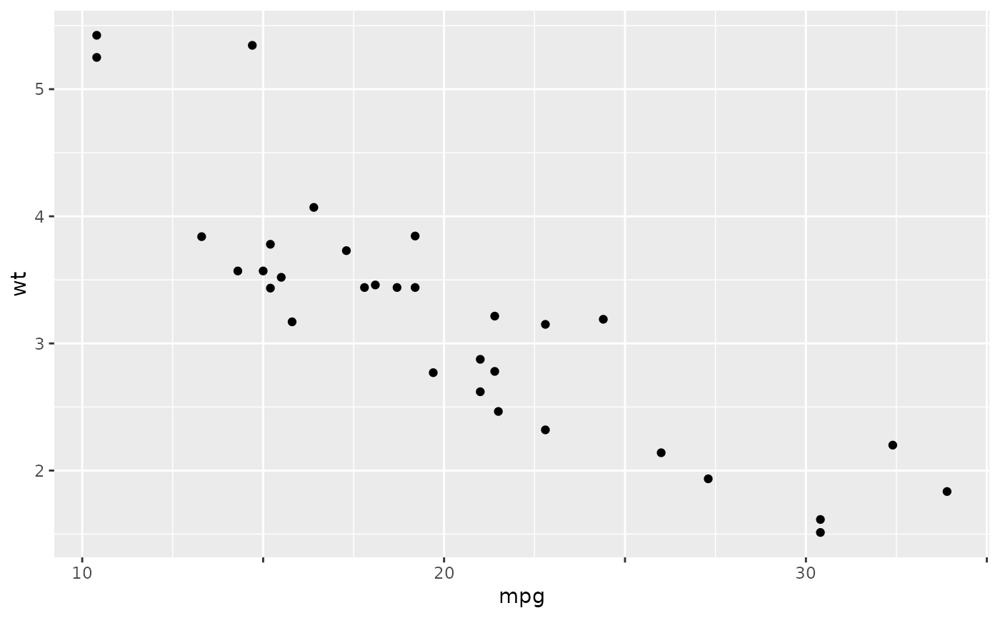
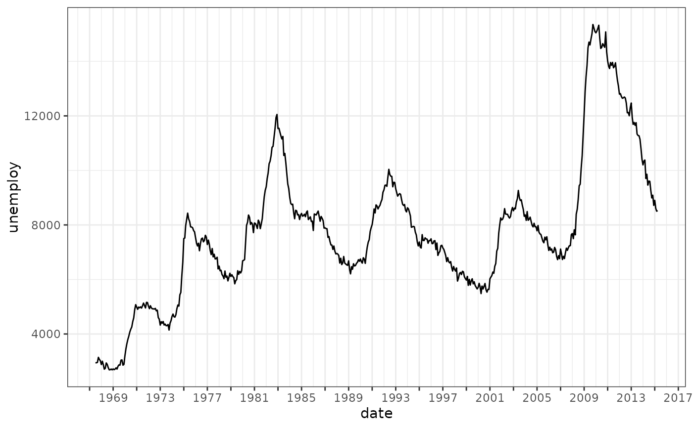

Creates a labeller function that removes every n-th label on an ggplot2 axis.
Useful for reducing overlapping labels while keeping the major ticks.
Arguments
- n
Integer. Display every nth label. Default is
2.- start
Where to start the pattern. Either
"left"for first tick (default),"right"for last tick, or an integer position (i.e.1for first tick,2for second tick, etc.).- labeller
Optional function to transform labels before applying skip pattern. For example
label_date(). For more complex labeller combinations usescales::compose_label().
Value
A function that takes a vector of labels and returns a vector with skipped labels replaced by empty strings.
Examples
library(ggplot2)
# Default skip labels
ggplot(mtcars, aes(x = mpg, y = wt)) +
geom_point() +
scale_x_continuous(labels = label_skip())

# Skip date labels, while keep ticks
ggplot(economics, aes(x = date, y = unemploy)) +
geom_line() +
scale_x_date(
date_breaks = "2 years",
labels = label_skip(start = "right", labeller = label_date(format = "%Y"))
) +
theme_bw()
